Teaching Point:
Today we will review what makes an animal a Mammal.
What Makes an Animal a Mammal?
There are many different types of animals. Mammals are one of them. Many animals we know are examples of Mammals. How do we know it's a mammal?
- Mammals are warm-blooded. That means that a mammals body temperature will try to stay the same whether it is hot or cold outside.
- Mammals have fur or hair.
- Mammals have spines.
- Mammals drink milk.
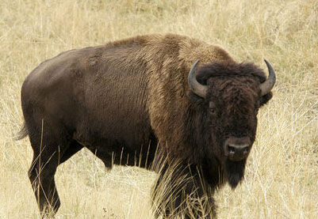
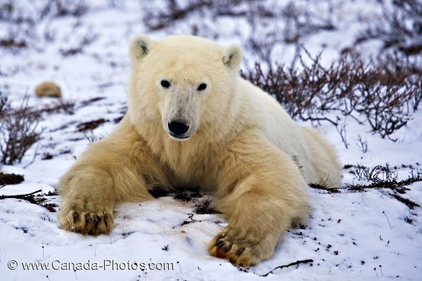
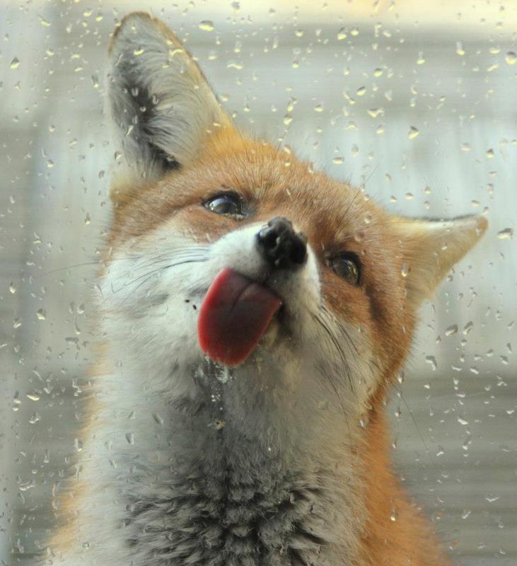
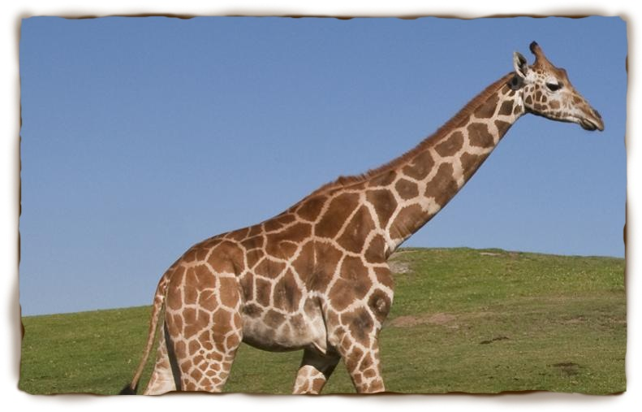
 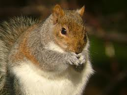
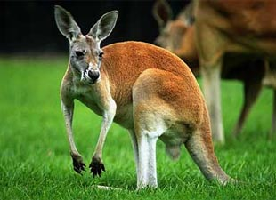
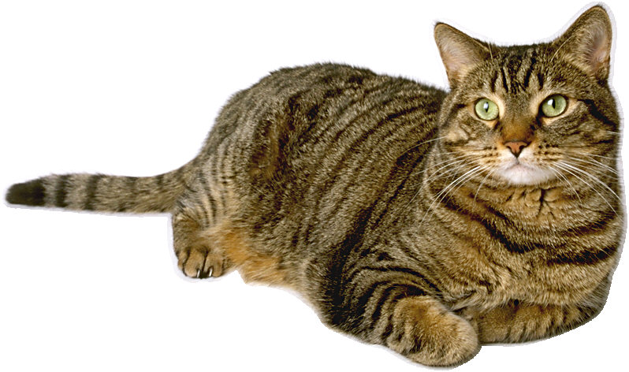
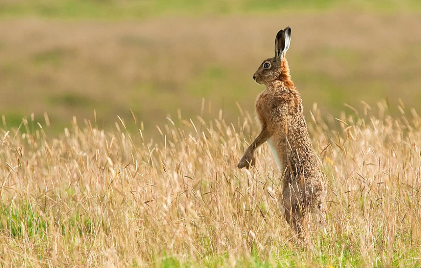
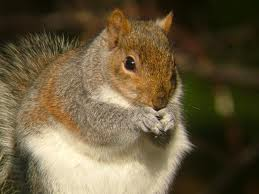
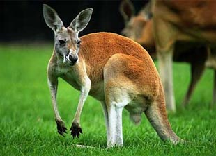
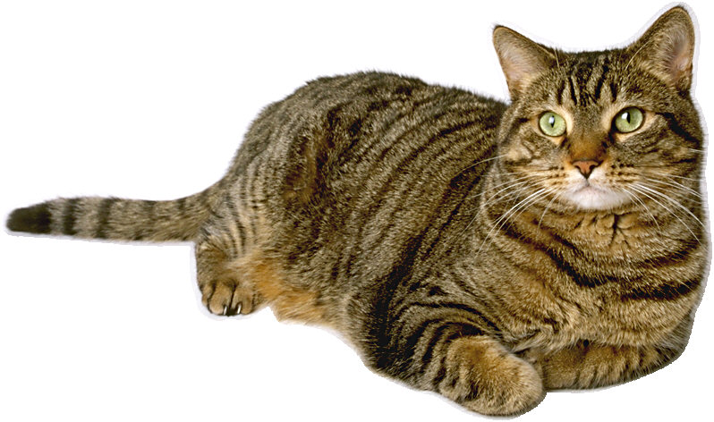
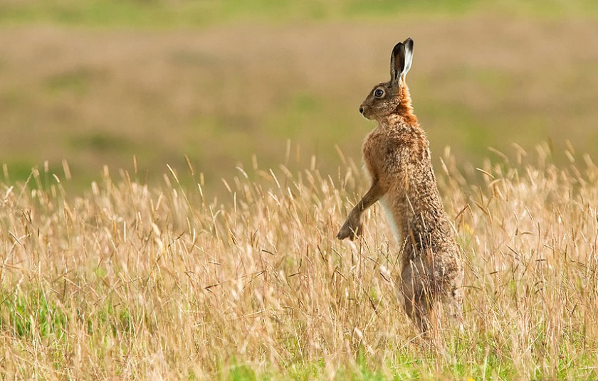
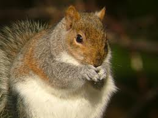
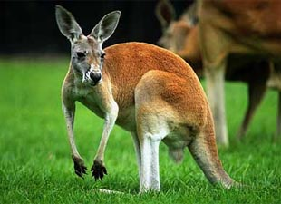
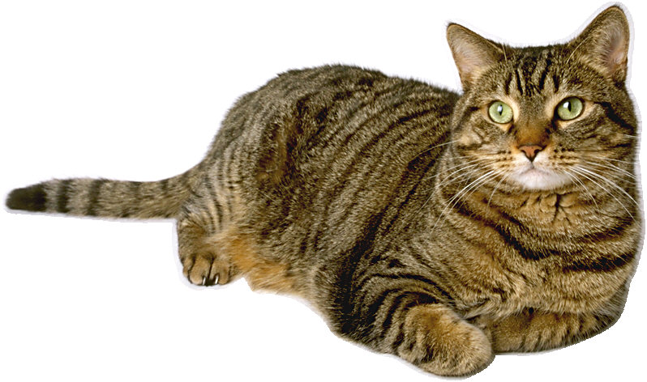
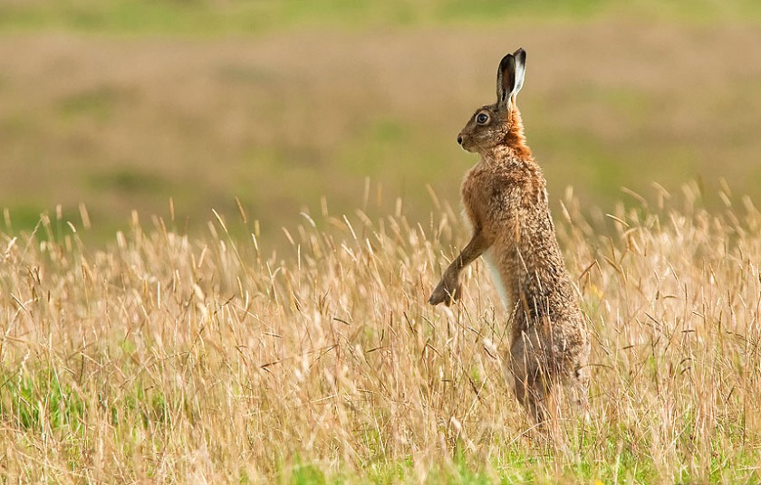
Today's Assignment
Make a mammals poster in Kid Pix using stamps from the Nature Menu. Use the T-Tool to write 1 or 2 things that you know about mammals.
Back to School Portal